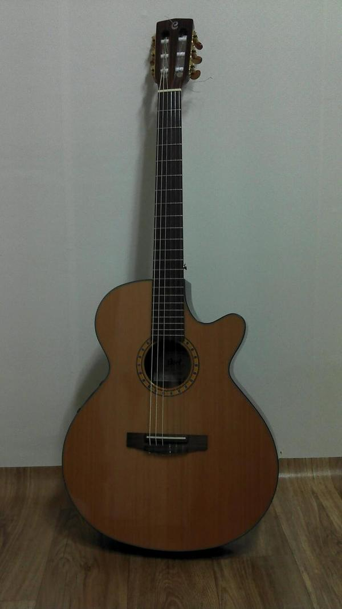
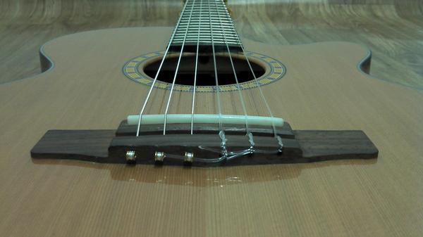
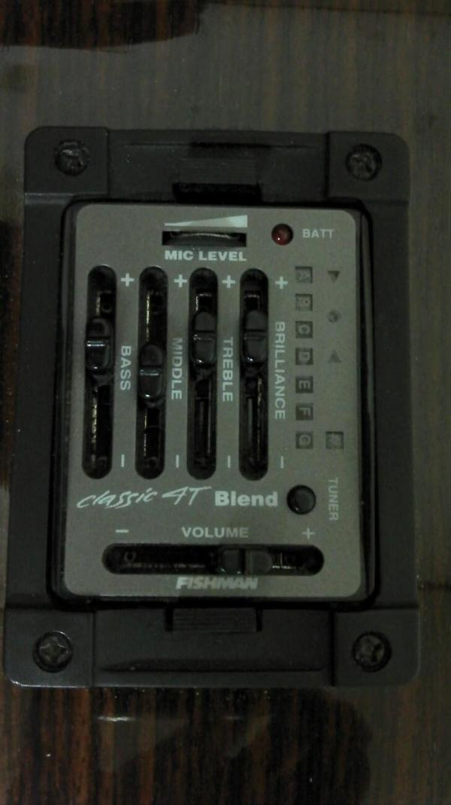
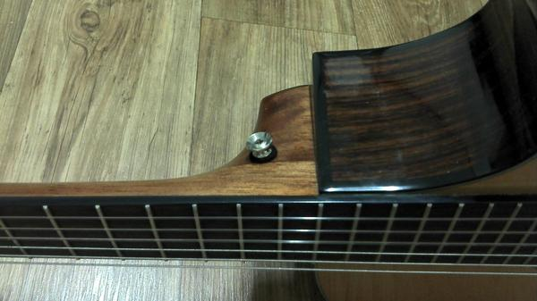
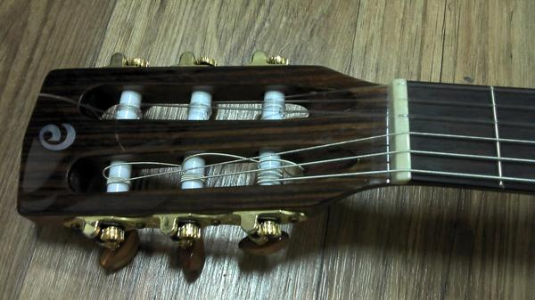
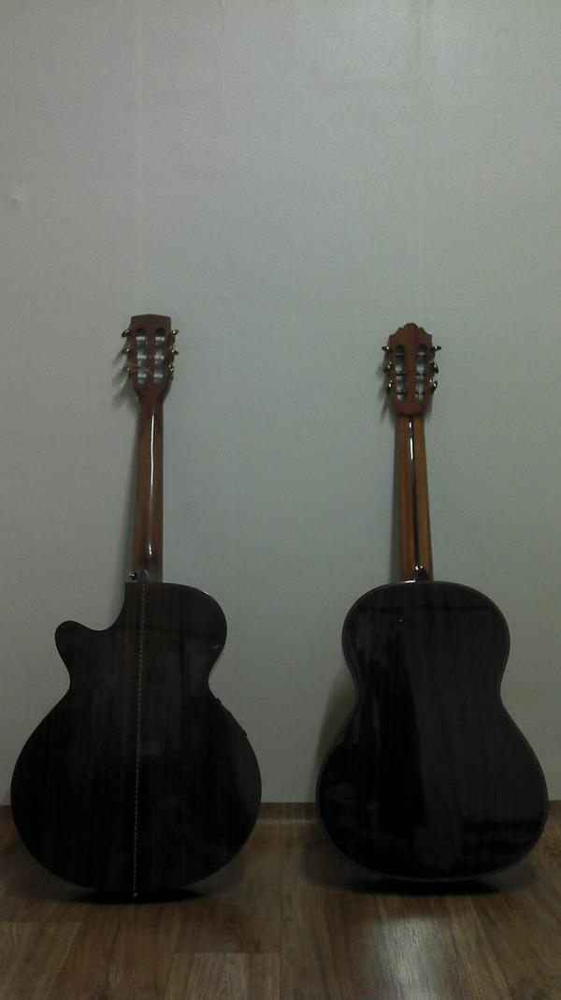
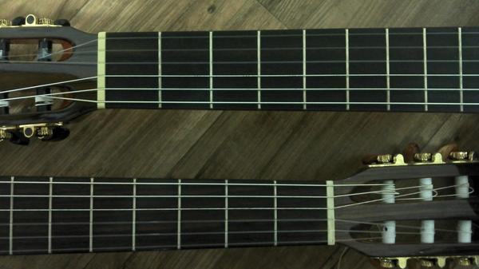

POSTS
Cort CEC7 리뷰
<Cort CEC7-NAT>
* 나일론 기타
* 프리엠프 : Fishman Classic 4T Blend
* 스트링 : GALLI(Ball End)
* 업그레이드 사항 : 넥쪽 멜빵고리 추가, 새들 교체(Bone Saddle)
일반 클래식 기타와 비교되는 큰 특징이 지판인데 지판 폭이 클래식 기타에 비해 좁고 round되어(볼록함)있어 통기타나 일렉기타 연주자, 손이 작은 연주자가 쉽게 연주할 수 있으나 일반 클래식기타에 익숙하다면 적응하는데 시간이 걸릴 수 있다.
교체한 본새들 덕분에 소리가 맑아졌고 서스테인이 길어졌다
일반 클래식 기타에 비하면 저음이 약한 편이지만 앰프를 사용한다면 이큐 조정으로 충분히 저음을 보강할 수 있다.
하지만 정통 클래식기타 톤과는 분명 틀리다.
피시맨 Classic 4T Blend 프리엠프는 피에조 픽업과 내장 마이크를 동시에 사용해서 소리를 믹스할 수 있어 피에조만 장착된 기타에 비해 자연스운 톤을 뽑아낼수 있다. 이 기타의 진가는 음향시스템을 통한 라이브에 있다해도 과언이 아니다. 물론 생소리도 훌륭한 편이지만 생소리의 음량이 적다는 점은 아쉬운 점
[상세스펙]
* TOP : Solid Red Cedar
* BACK : Rosewood
* SIDES : Rosewood
* NECK : Mahogany
* TRUSS ROD : Non-Adjustable Steel Bar
* FINGERBOARD : Rosewood
* INLAY : N/A
* TUNERS : Slotted Gold w/ Brown Knobs
* BRIDGE : Rosewood
* SOUNDHOLE : ROSETTE Modern Classic Rosette
* BINDING : Multiple Black
* SCALE : 643mm (25 5⁄16”)
* BODY : DEPTH 83 x 83mm
* NUT : WIDTH 45mm (1 3⁄4”)
* FINISH : Gloss
* COLOR : NAT
* PICKGUARD : N/A
* STRING : GALLI
* ELECTRONICS : Fishman Classic 4T Blend

* 교체한 본새들

* Fishman Classic 4T Blend : 앰프 사용시 Mic Level은 하울링이 발생하지 않을 정도만 올린다

* 직접 장착한 멜빵고리. Body쪽에 구명을 내면 구멍이 넓어져서 고리가 빠질 수 있어서 저 위치로 선택. cort는 왜 넥쪽 멜빵고리를 장착하지 않았는지 이해 안됨. 라이브 시 기타를 앉아서 치란 말인가?


* 일반 클래식 기타보다 바디가 두께는 얇지만 엉덩이는 더 펑퍼짐 하다. 부족한 울림을 보강하기 위한 선택인듯(왼쪽이 CEC7 오른쪽은 엄태창 클래식 기타)

* 눈으로 보기에도 일반 클래식 기타와 지판 폭이 많이 차이난다(위쪽은 일반 클래식기타-엄태창, 아래쪽이 CEC7)

-
 후니 2012/03/08 17:53 # 답글 안녕하세요~ 세미클래식기타 구매를 계획하고 있는 1인입니다.
후니 2012/03/08 17:53 # 답글 안녕하세요~ 세미클래식기타 구매를 계획하고 있는 1인입니다.
혹시 파시는 건가요?
파시는 거면.... 얼마에 파시는지 알 수 있을까요?
연락 부탁드립니다.^^
-
 sadButTrue 2012/04/06 09:33 # 답글 후니님~ 이제야 글을 봤어요. 저 기타 팔렸습니다. ^^
sadButTrue 2012/04/06 09:33 # 답글 후니님~ 이제야 글을 봤어요. 저 기타 팔렸습니다. ^^